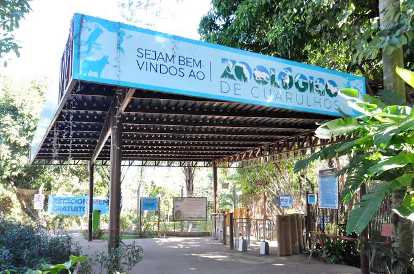

Sobre o zoológico
A estrutura do zoo conta com 59 recintos de exposição, setor extra e quarentenário, que abrigam os animais residentes
e animais recém-chegados e em tratamento. Há no local clínica veterinária e área de manejo, com salas de atendimento,
laboratório, sala de cirurgia, área de internação e sala de necropsia, e também um setor de alimentação e biotério
para produção de alimentos vivos.
O Zoo possui uma área de mata e lagos que atraem muitas espécies de aves de vida livre, que podem ser observadas e
facilmente, tornando o passeio ainda mais agradável.
Também é desenvolvido pesquisas em áreas da medicina veterinária e biologia por seu corpo técnico, e também participa e
projetos de outras instituições, como programas de mestrado, doutorado e iniciação.
O Zoo de Guarulhos mantém uma rica vegetação com árvores exóticas e nativas que proporciona uma linda paisagem e ainda
contribui com a alimentação das nossas aves.

Atualmente são mantidos em exposição cerca de 500 animais de 100 diferentes espécies entre mamíferos, aves e répteis em recintos dispostos em meio a jardins, árvores nativas e lagos margeados por áreas reconstituídas com espécies da Mata Atlântica.